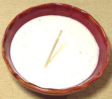

|
White Sauce - Béchamel SauceWestern World | ||||
| Makes: Effort: Sched: DoAhead: |
2 cups ** 15 min Yes |
This very simple sauce is the base for many dishes and many sauces. Before the French Revolution it was a veal velouté with a lot of cream in it, but this form was set down by Auguste Escoffier in 1903, and has been standard ever since. | |||
|
|
1 1 2 1/3 1/4 ------ 3 |
oz oz c t t --- T |
Butter Flour Milk Salt Pepper (3) ---------- Cream (5) |
Important: start a bit more than you need. Some will stick to the sides of the pan, and if you scrape it down you'll get lumps.
|